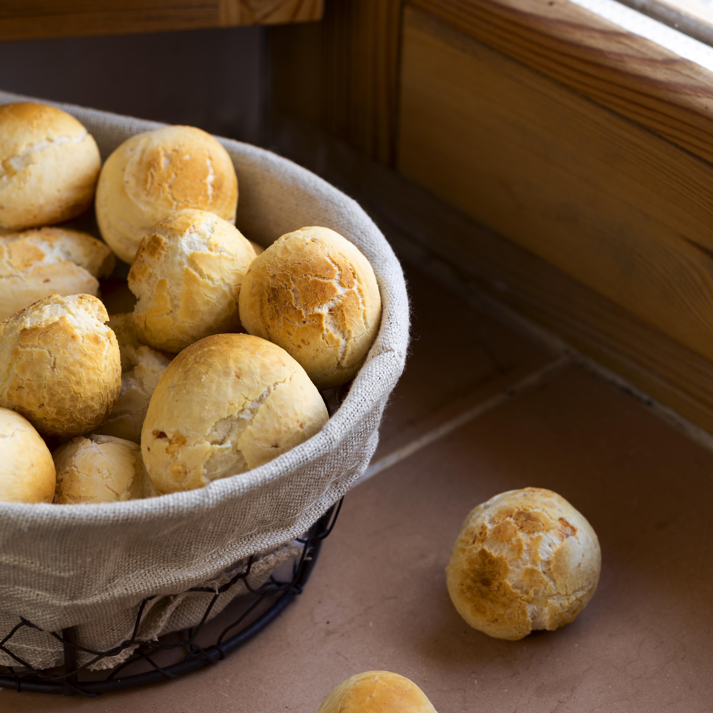
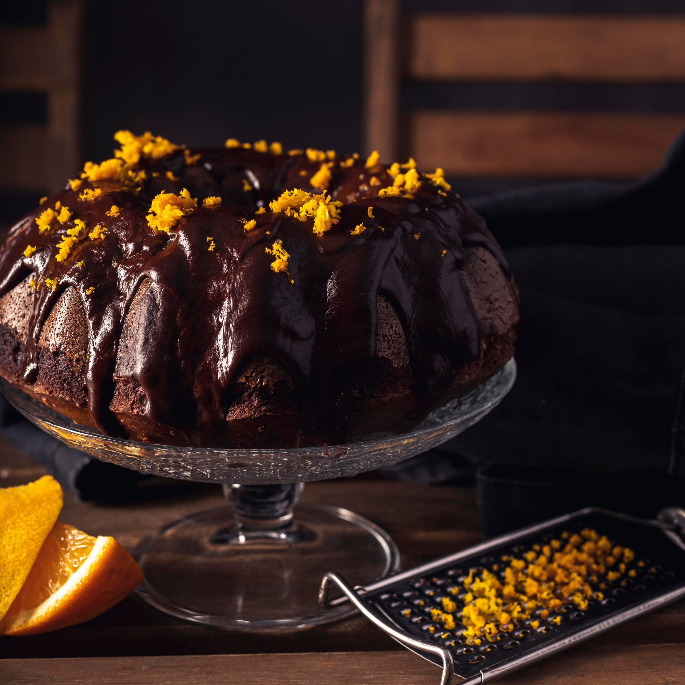
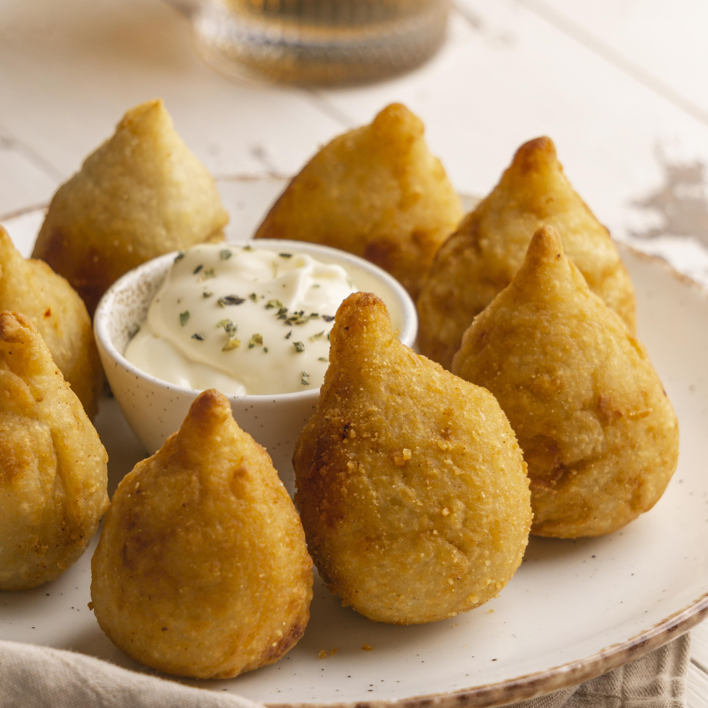

Pão de Queijo
O pão de queijo é um clássico Mineiro, conhecido nacionalmente por sua casquinha crocante e interior macio e saboroso. Feito com polvilho e queijo e ovos, ele é uma opção irresistível para o café da manhã ou lanche. Fácil de preparar e cheio de sabor que agrada a todos, é uma verdadeira tradição que conquista a todos.
45min
80 kcal/und

Bolo de Laranja
O bolo de laranja com cobertura de chocolate é uma combinação deliciosa e sofisticada. Ideal para um café da manhã especial ou uma sobremesa para qualquer ocasião, este bolo oferece uma mistura perfeita de sabores cítricos e chocolatados, resultando em uma experiência saborosa e agradável para todos.
1h45m
250 kcal/und

Coxinha de Frango
A coxinha é um dos salgados mais amados do Brasil, famosa por sua casquinha crocante e recheio suculento. Feita com uma massa leve e macia, a coxinha é recheada com frango desfiado e temperado. Ideal para qualquer ocasião, a coxinha é um clássico que conquista a todos com seu sabor irresistível.
2h
150 kcal/und